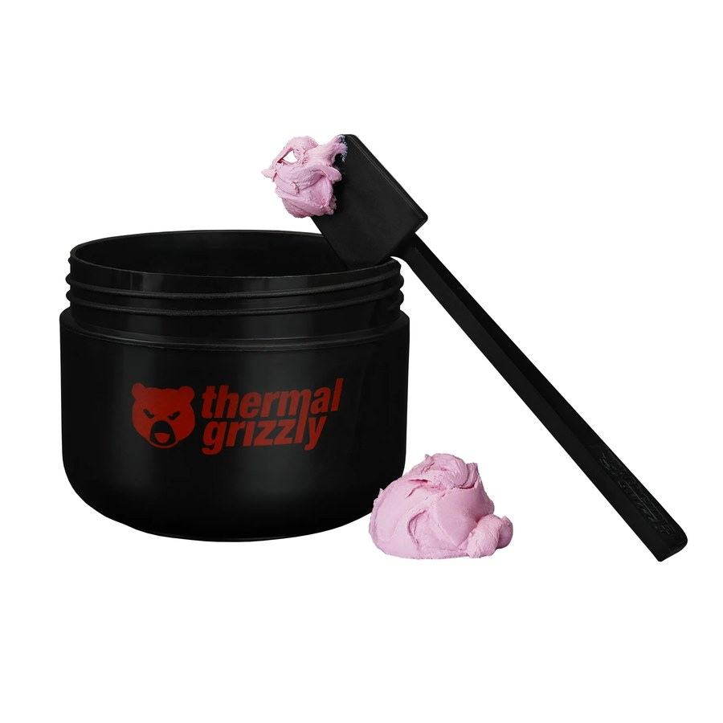

Thermal Grizzly Putty Basic
La opción accesible — reparación general y mantenimiento
Conductividad declarada~5 W/mK
TipoMasilla densa, no conductiva
Vida útilEstable durante años en uso normal
AplicaciónReparación de equipos mainstream y mantenimiento de garantía
Por qué elegirla
- El nivel de entrada a la línea Putty con respaldo de marca alemana premium
- Excelente para taller con flujo constante de reparaciones de GPUs y motherboards mainstream
- Conductividad equivalente a un pad de silicón estándar pero adaptable a cualquier geometría
Para otros usos considera
- Si el cliente tiene GPU high-end o workstation → Putty Advance o Pro
- Si el componente es plano y uniforme → Pad Stejar 12.8 W/mK rinde mejor
Presentaciones disponibles
| SKU | Gramaje | Aplicación |
|---|---|---|
| TG-P-B-030-R | 30 g | Reparación individual o pocos equipos |
| TG-P-B-100-R | 100 g | Taller con flujo regular de reparaciones |
Aplicaciones típicas
Reparación de GPU mainstream30 g para una sola tarjeta
Servicio técnico general100 g como inventario base
Taller en garantía100 g para mantenimientos repetitivos
Cliente DIY ahorrador30 g cuando solo necesita una aplicación
Componentes y equipos típicos
- GPUs: RTX 3060 / 3070 · RX 6600 / 6700 / 6700 XT
- Motherboards: B650, B760, X570 con VRM estándar
- Equipos: reparación de PCs en garantía, servicio técnico mainstream, mantenimiento general de tarjetas
Qué temperatura esperar
| Componente | Mejora típica |
|---|---|
| VRAM gaming | 3 a 6 °C menos vs sin contacto correcto |
| VRM motherboard | 2 a 5 °C menos |
| Chipset | 3 a 7 °C menos |
Su ventaja sobre pads convencionales no es la conductividad sino la adaptabilidad a geometrías irregulares.